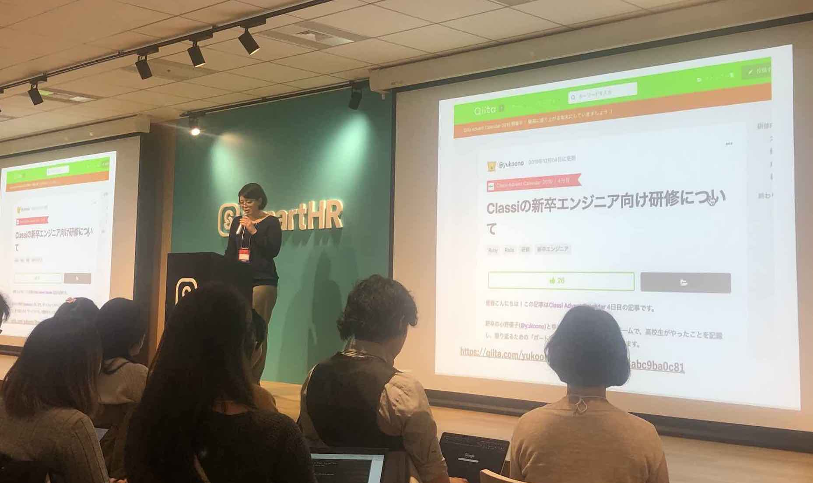
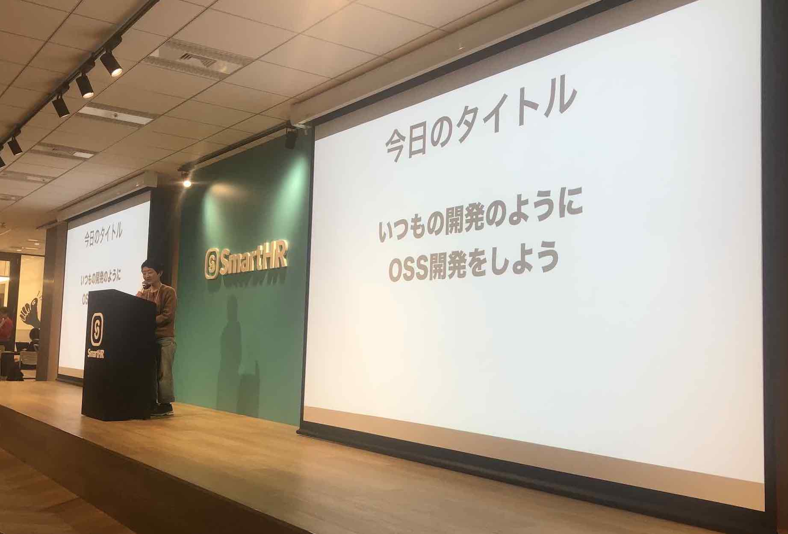
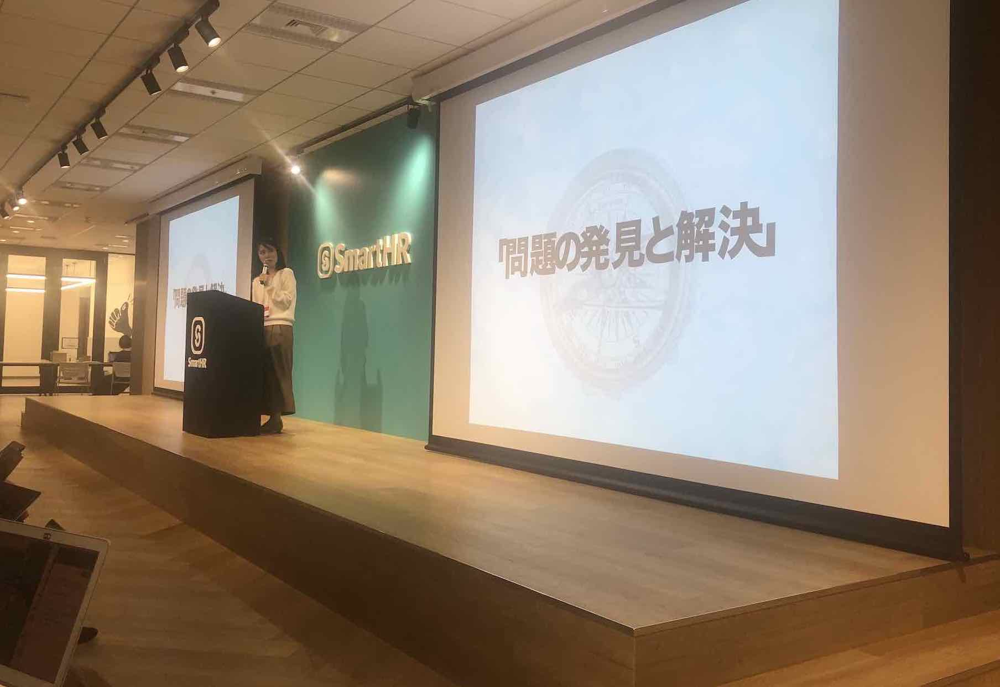
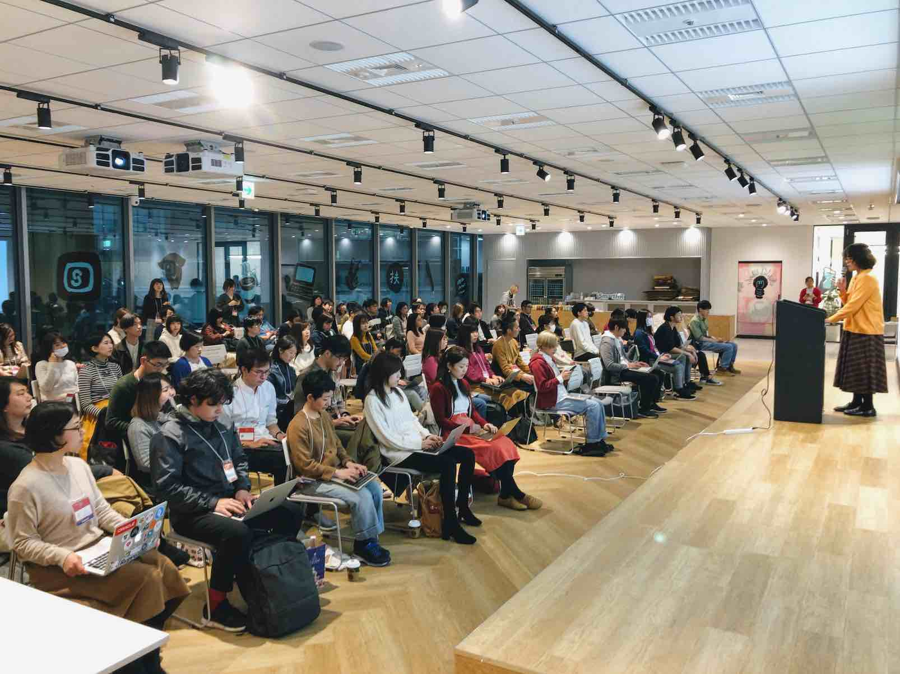
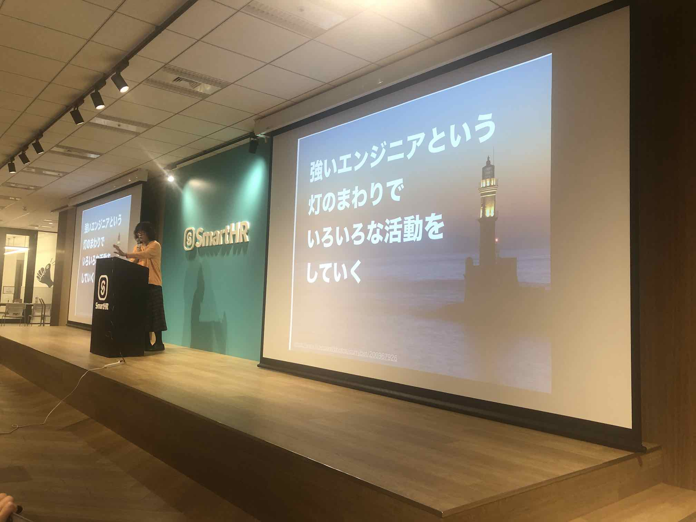
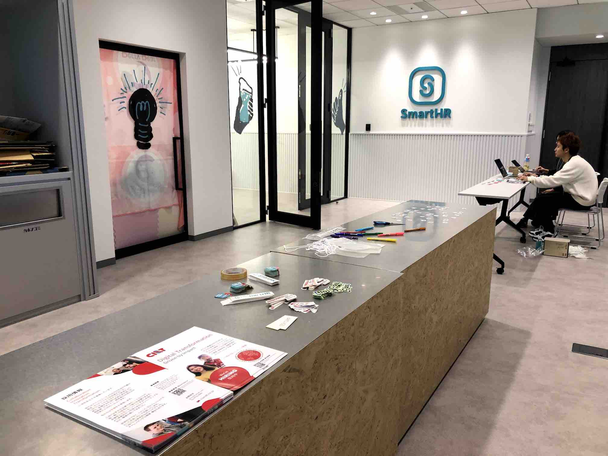
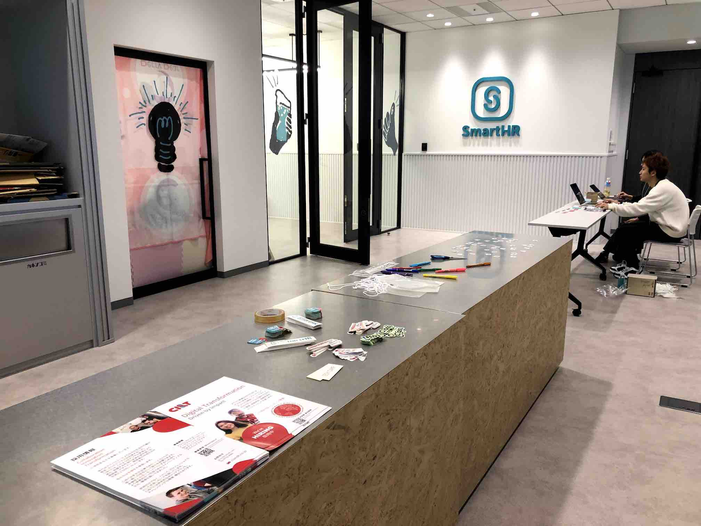
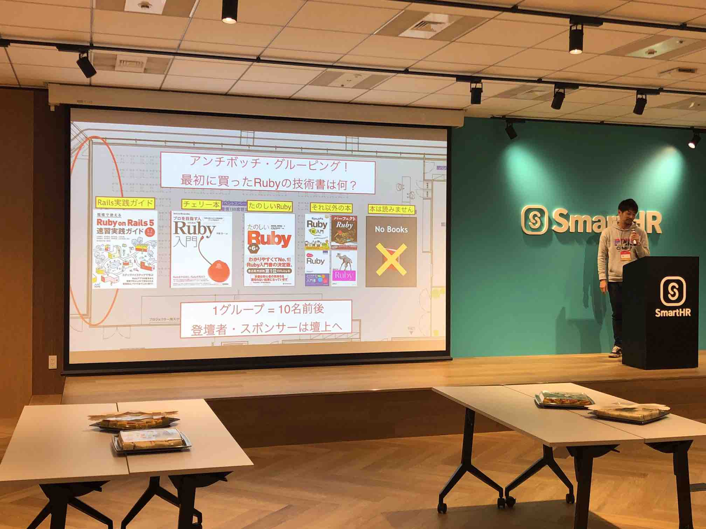

TokyoGirls.rb Meetup vol.2 開催レポート
初稿：2020-02-02
TokyoGirls.rb Meetup vol.2 が開催されました！
はじめに
2019年12月21日に、TokyoGirls.rb Meetup vol.2というイベントが開催されました。
男性エンジニアも女性エンジニアも性別関係ない勉強会で、熱量も高く、セッションからはたくさんの刺激を受けました。
この記事では、イベントの様子を参加者の視点からレポートしたいと思います！
イベント終わりに撮影した集合写真は、Ruby勉強会ならでは「Rubyで配列をループさせるときに使うメソッドは？」「はい、each！」のかけ声で、みなさんこの笑顔です。

TokyoGirls.rbとは
TokyoGirls.rbは「女性も参加しやすい（でも女性限定ではない）Ruby勉強会」として企画された勉強会で、今回が2回目の開催でした。
最終的には開発の現場や勉強会における男性と女性の比率が同じくらいになることを目指しているそうです。
今回の参加者数は、男性も女性も同じくらいだったそうです。
イベント名に「Girls」こそつきますが、女性のみをターゲットにしたイベントではなく、男性も女性も参加していて、セッション内容も女性やジェンダーに特化した内容はありませんでした。参加枠として、女性専用枠を設けることで参加者が男性だけに偏らないよう配慮され、さらに性別不問で参加申し込みできる枠があり、託児室の利用も性別不問でした。
イベントの細部に渡って女性が参加しやすいような配慮がなされていたので、参加にあたり女性の私には安心感が大きくありました。
vol.1のレポートはこちらを、イベント企画に込められた運営の方の思いはこちらをお読みください。
イベント概要
開催日時
2019/12/21(土) 13:00-18:00
開催場所
株式会社SmartHRさま
東京都港区六本木3-2-1 住友不動産六本木グランドタワー 8F SmartHR Space
参加者数
68名（女性:37名 男性:31名）
イベントページ
https://techplay.jp/event/759089
当日のセッションの紹介
登壇者は全員、現役の女性エンジニアまたはデザイナの方でした。
8名の方が登壇され、スポンサー企業さま4社のLTがあり、もりだくさんの内容でした。
興味を持ったセッションはぜひ資料を見ていただきたいです。
Ruby on Rails 最初の一歩 / ただあき さん

Classiさんで新卒研修や実務経験が浅い人のフォローに関わっているただあきさんから、プログラミング、RubyやRails、Webエンジニアの仕事をはじめたばかりの方に向けた、Ruby/Railsの最初の一歩についてのセッションでした。
Ruby/Rails関連のドキュメントの歩き方、デバッグ方法、PRの書き方などについて、押さえておくべき大事なことがぎゅっと詰まったお話でした。例えば、ググる前に公式ドキュメントを見ることでなぜこう書くのか根拠がわかることや、PRを出すときに気をつけること、コードレビューもコミュニケーションであることなど、基本に立ち戻るためにこれから先も見返したくなるスライドでした。レビュアになるときにも役立つ内容だと思います。
お話の最後の方で、プログラミングをはじめたばかりの人へのメッセージで、「焦らなくても大丈夫、ゆっくりでも一歩ずつでも進んでいけたらすてき」という言葉がやさしくて心に残りました。
講演資料：Ruby on Rails 最初の一歩
お話聞いてくださった方々、ありがとうございました！（修正したいところもあるのですがMacbookが起動しなくなったためこのまま公開します）https://t.co/KeuHLiGhoS#tokyogirlsrb
— ただあき (@tdakak) December 21, 2019
事業知識を深掘りし、より人の役に立つサービスに改善する / Kubota Nao さん

大阪の住宅ローンのWebサービスの会社でエンジニアをされているKubotaさんのセッションです。
ご自身の経験から、当初、住宅ローンについて知識が少ない状態でDB設計したことで要望に沿ったデータ提供ができない、内部処理が複雑になってしまうなどの問題が起きていたところ、事業知識を深掘りしたことで改善した体験談をお話くださいました。事業知識を得るために、住宅ローンについて学び、住宅ローンアドバイザーにもなられたそうです。
事業知識が増えたことで、本質的なサービスの改善提案ができるようになったり、コミュニケーションが円滑になり、コードもきれいに書けるようになり、より良いサービスが提供できるようになったということでした。
ドメイン知識が少なく本質的な理解をしていない状態だと、DB設計が崩れてしまうお話がとても説得力がありました。
お話を聞いて、良いサービスをつくるために自分も事業知識をつけていかねば、とやる気にさせてくれるセッションでした。
講演資料：事業知識を深掘りし、より人の役に立つサービスに改善する
発表内容note記事：事業知識を深掘りし、より人の役に立つサービスに改善する｜Kubota Nao｜note
スライドと、発表内容のnote記事版公開しておきました！
— Kubota Nao (@kazenomachi_) December 21, 2019
「事業知識を深掘りし、より人の役に立つサービスに改善する」https://t.co/XGHOYqzM89#tokyogirlsrb
Rackミドルウェア入門のためのRackミドルウェア / 塩井美咲（しおい/@coe401_ ）さん

塩井さんのRackについてのセッションです。
各Rackミドルウェアを通す前と通した後でレスポンスヘッダにどんな変更があったか知りたいという好奇心から、レスポンスヘッダの変化をターミナルに表示するRackミドルウェア、TraceHeaderを自作された、というお話です。
RackアプリケーションとRackミドルウェアは共通の規格に沿って実装されているので、その前提を基に実装されたそうです。
お話を聞いて、好奇心から作りこんでいったのがすごい、と思いました。
講演資料：Rackミドルウェア入門のためのRackミドルウェア
動画：https://www.youtube.com/watch?v=IOyIbwEK-hI&list=PLFx9pxEyVULEacn-w_v63GAOwLFYzrr_Y
ということで、遅ればせながら本日のTokyoGirls.rb Meetup vol.2にて高速で噛み倒して参りましたので発表資料を共有します💁♀️
— しおい🔨全てが釘に見える (@coe401_) December 21, 2019
聴いて下さった方、ありがとうございました！
Rackミドルウェア入門のためのRackミドルウェア https://t.co/y1rvLZfZcn#tokyogirlsrb
エンジニアとチームを組んで見えないものをデザインする / 羽野めぐみさん

株式会社キッチハイクさんのデザイナ、羽野さんのお話です。
羽野さんはもともとフリーランスで活動されていて、会社に入ってチームのデザイナとして活動するようになってから組織デザインやチーム文化の形成などの「目に見えない」デザインに関心を持つようになったそうです。デザイナの視点から、エンジニアとの協業やチームをテーマにしたセッションでした。
チームと向きあうようになったきっかけとして、フリーランスのときに体温のあるコミュニケーション（文脈の共有）がなかった経験をお話されました。
画面遷移を考えるとき、デザイナはユーザー操作を捉えたい一方、エンジニアはデータの流れを知りたいというように、同じものを見ても違う視点で語っている、というお話が印象的でした。視点の異なるメンバーと一緒につくっていくには、文脈を共有しながらお互いを知る、相手の関心ごとや大切にしている視点を引き出す（ユーザーインタビューに近い）、他者へのリスペクトや想像力を持ってコミュニケーションをくりかえすことをお話されました。
私もチームで仕事するときに、同じものを見ても違う視点になる場面はよくあるので、違う視点のメンバーとどう協業していくかという話が心に響きました。コンテキスト、文脈の共有、がこのセッションのキーワードであるように感じました。
講演資料：エンジニアとチームを組んで見えないものをデザインする
動画：https://www.youtube.com/watch?v=ntjtKTN0Lzk&list=PLFx9pxEyVULEacn-w_v63GAOwLFYzrr_Y
TokyoGirls.rb #2 で登壇させていただきました！今日のスライド資料です。 職種に関係なく、チームビルディングやコミュニケーションを良くしていきたいひとに向けてお話しました。 #tokyogirlsrbhttps://t.co/Bao9HriI7m
— はのめぐみ (@featherplain) December 21, 2019
プロジェクトマネジメント沼にようこそ / 浪川舞（まいどる） さん

PeerQuestという会社を経営されている浪川さんの、プロジェクトマネジメントのおもしろさについてのセッションです。
プロジェクトマネジメントを知ると開発がスムーズにいってもっとたのしくなる！というお話でした。
炎上プロジェクトでのPM原体験で、朝会の定期開催、進捗管理数値の分析、メンバー全員の顔を見るといった取り組みで、プロジェクトを見える化し、やるべきことが明確になったお話がありました。副次的効果として、問い合わせ対応がスムーズになり、属人化していた暗黙知が共有され、ゴールが見えたことでタスクの調整がしやすくなるなど、チームだけでなく個人にも良いことがたくさんあったそうです。
PMをするとき大事にしていることとして、PMBOK/ITILなどのセオリーの活用、数値の分析、人とのコミュニケーションを意識されているそうです。
お話を聞いて、上下でない1on1/NonN（メンバーどうしの1on1など）、自分とメンバーの特性を知ること（ストレングスファインダーや16Personalitiesの診断結果の共有）など、やってみるとおもしろそうだと思いました。
講演資料：プロジェクトマネジメント沼にようこそ
動画：https://www.youtube.com/watch?v=kr0L0LNwdFE&list=PLFx9pxEyVULEacn-w_v63GAOwLFYzrr_Y
今日の資料もあっぷ。
— まいどる社長🧝🏻♀️1/11(土)ITエンジニア経営者LT (@maidol_28) December 21, 2019
懇親会ではエンジニアとしての楽しさやマネジメントの面白さ、色んな視点のディスカッションができました✊全部メモしきれていないのが悔やまれるくらい知見のシャワーだった…！
2020年に向けて、自分もさらにパワーアップしたい🧝🏻♀️✨https://t.co/v3cP5WQX7b#tokyogirlsrb
いつもの開発のようにOSS開発をしよう / makicamel さん

makicamelさんがOSS開発に一歩踏み出したセッションです。DeviceとDeviseTokenAuthというgemのIssueにPRを出した経験をお話してくださいました。
私は「OSSってすごい人がすごい技術でやってる」「雲の上の活動」のような感覚だったのですが「自分でも少しやってみてもいい・・・のかも・・・？」と思わせてくれるお話でした。
makicamelさんがPRを出すためにやったこと（調査・修正、後方互換性の維持、テストの追加、マージされるための努力）はいつもの開発と同じで、違うことは、英語、相手が目の前にいない、コードのコンテキストが分からないという点だったそうです。コードのコンテキストがわからないのは転職したてのときも同じなので特別なことではないとお話されました。また、わからないことは知ればいいので、makicamelさんは、毎朝rails/railsのIssueまたはPRを1つ以上見ることを習慣づけていて、それにより、わからないものが具体化され「わからん」「こわい」という漠然とした苦手意識がなくなってきたそうです。
お話を聞いて、「わからないからこわい」を「わかるようになるのがたのしい」に変えていけたらいいなと思いました。また「みんな優しい、OSSにはそんな気風がある」「好きなリポジトリを開いてみよう」という言葉が心に残りました。
講演資料：いつもの開発のようにOSS開発をしよう
動画：https://www.youtube.com/watch?v=D1CK18FMnJI&list=PLFx9pxEyVULEacn-w_v63GAOwLFYzrr_Y
OSSってすごい人がすごい技術でしゅっと直しててすごすぎて漠然とこわい、自分なんかができるもんじゃない、
— makicamel (@makicamel) December 21, 2019
みたいな不安があったのだけどそれを乗りこえたお話をします。
(比較的爆速でお話するので手元で資料見たい方はこちらをご覧ください😌)https://t.co/n3HWLFGypq#tokyogirlsrb
絶対に手戻りしない！時短勤務ママエンジニアの、要件ヒアリング力 / ちょうかおり さん

時短勤務でお子さんがいてエンジニアをされてる、ちょうかおりさんの要件ヒアリングについてのセッションです。
私も6歳の子がいてエンジニアなので、すごく聞きたいお話でした。
依頼者の理想を正しく把握することが大切で、そのための要件ヒアリングをどのように行うかについて具体例を混ぜてお話してくださいました。
エンジニアの仕事の本質は「問題の発見と解決」、そのために「背景を知る」、明日からできることは「なぜ？を聞く」ということをまとめとして話してくださいました。また「納期」は相手の期待値のひとつにしかすぎないので、一旦聞いて恐れず期待値調整するというお話は、とても説得力がありました。
講演資料：絶対に手戻りしない！時短勤務ママエンジニアの、要件ヒアリング力
動画：https://www.youtube.com/watch?v=cpstY1o5ceo&list=PLFx9pxEyVULEacn-w_v63GAOwLFYzrr_Y
#tokyogirlsrb の登壇資料
— kaori_cho@ママエンジニア (@kaori_cho) December 21, 2019
Sperkerdeck派のひとはこちらをドウゾ。
時短勤務ママエンジニアが、要件ヒアリングのコツについて話しました。https://t.co/Eo28LhkjDo
Keynote：強いエンジニアという灯 / 大場寧子 さん
 
株式会社万葉の創業者、大場さんのKeynoteです。
強いエンジニアとは、技術を使った問題解決がうまい、折れない心でエンジニアリングができる、骨太、柔軟で広いと挙げられていて、強いエンジニアになるための効果的な学習について、お話してくださいました。
- 自分の頭で考える
- 覚える
- 結果を覚えるのではなく、結果を生み出す法則を覚える
- 信念を積み上げる
- 性質や挙動をふわっと理解したまま先に進まない、ぐらぐらした土台の上に次の土台を積まない
- 自分のやったことを評価する（成長速度に関わるキー・ファクター）
- 仕事 → どうだったか評価 → 学ぶ
- その仕事はうまく行ったのか、どんなところを失敗したか、成功した形を覚える
- 失敗は最高の学習法
- 失敗の芽を知っているから回避できる、失敗の芽を蓄えることが強いエンジニアになることに繋がる
- たくさん失敗する（失敗できる環境に身を置く）
- うまくいっている状態をパターン認識
- うまくいっている状態（コード、チーム）はきれいな部屋のようなもので何かがおかしいことに気付きやすい
- うまくいっている状態をパターンとして覚えておいて、今の現実と比べる
- コードレビューのときに重宝する（書かれるべきコードがないことを見つけるのに役立つ）
お話の最後に、強いエンジニアという灯に向かって進んでいく途中で仕事の選択肢は色々あることを話してくださいました。大場さんの場合、ずっとコードを書くために会社を作り、会社をうまく回すためにマネジメントをするようになり、今は組織を整えることにオブジェクト構造を整えることと同じようなたのしさを見出しているそうです。他にも、強いエンジニアを目指す旅の途中で、エンジニアリングで何を実現したいのか気になる人はプロダクトオーナーに、チームが生き生きと働くことに興味をもてばマネジメント、チーム開発、組織の仕組みづくりをしたり、家族や趣味のために現場を去ることもあり、強いエンジニアという灯のまわりでいろんな活動をしていくことをお話されました。
私は、これからエンジニアとしてどこまで続けることができるか不安になるときがあるのですが、その気持ちに寄り添ってくれて、これから先ときどき思い返したくなるような、すばらしいKeynoteでした。
資料：強いエンジニアという灯
動画：https://www.youtube.com/watch?v=KZ51RF6GL0w&list=PLFx9pxEyVULEacn-w_v63GAOwLFYzrr_Y
今日のkeynoteの資料を公開しました https://t.co/jX3mn4e4si #tokyogirlsrb
— Yasuko Ohba (大場寧子) (@nay3) December 21, 2019
スポンサーLTの紹介
株式会社SmartHR さま
SmartHRさまは、エンジニアは32名で、大きく2つのプロジェクト（本体機能のSmartHR、SmartHRで蓄積した人事データを利用した新サービス）があり、マイクロサービス的な開発をされているそうです。
動画：https://www.youtube.com/watch?v=8jFOmoUXLGw&list=PLFx9pxEyVULEacn-w_v63GAOwLFYzrr_Y
CI&T株式会社さま
会社のミッションである”We develop people before we develop software.”について、人を成長をさせるために存在している会社であり、このミッションが自分と他の人の存在価値を見出すことに繋っていることについてお話してくださいました。
動画：https://www.youtube.com/watch?v=IJRCFbNQnTE&list=PLFx9pxEyVULEacn-w_v63GAOwLFYzrr_Y
トレジャーデータ株式会社さま
SREのエンジニアの方が、トレジャーデータのSREについてお話してくださいました。規模として、約30の内部サービスに分かれていて、AWSの複数のリージョンにまたがり、500以上のクラスタ、2000台以上のインスタンスを運用されているそうです。
動画：https://www.youtube.com/watch?v=Vm8u5g_EmLA&list=PLFx9pxEyVULEacn-w_v63GAOwLFYzrr_Y
株式会社万葉さま
万葉さまは、Ruby on RailsによるWebアプリケーション開発を提供されていて、2019年7月に株式会社レトリバと経営統合し、これからもエンジニアリングパートナー事業を続け、そこに機械学習、自然言語処理なども加わることになるそうです。
動画：https://www.youtube.com/watch?v=bMDi-z5y8K0&list=PLFx9pxEyVULEacn-w_v63GAOwLFYzrr_Y
イベントについて
イベント会場
SmartHRさんの会場は広くて開放感があり、とてもきれいでした。会場のとなりの部屋に託児室も用意されていました。
会場は、椅子が互い違いに配置されていて、前が見やすいように工夫されていました。
 

名札とTwitterアイコン
受付すると、名札に貼るTwitterアイコンのシールが用意されていました。これがとても良かったです！Twitterで見かけていた人がわかりやすく、懇親会でフォローしやすくなったりしました。
名札のデザインはSmartHRさまのデザイナさんがされたそうです。とてもすてきな名札でした。

アンチハラスメントポリシー
オープニングで運営の伊藤淳一さんがお話され、アンチハラスメントポリシーについても説明してくださいました。こちらにまとまっています。
隣に座ってる人が笑顔で帰ってもらうにはどうしたらいいか相手の立場や気持ちを考える、という説明がわかりやすかったです。
懇親会
懇親会は、アンチボッチ対策（ボッチ：懇親会でひとりぼっちになってしまうこと）が万全でした。
テーブルが5つに分けられ、「最初に買ったRubyの技術書は何？」のテーマでグルーピングされました。
壇上のスライドには、会話のきっかけになるネタや、パックマンルール（他の人が入りやすいように1人分のスペースを空けて話す）、おすすめの勉強会情報などが投影され、随所にアンチボッチの工夫がされていました。
そのおかげで私もぼっちになるタイミングはなく、いろいろな方とお話しながら懇親会をたのしむことができました。
 

託児室
会場すぐ横に託児室が準備されていました。6名のお子さんが利用され、登壇者の方やパパエンジニアの方も利用されたそうです。
託児室があるから参加できた、という方も何人かいらっしゃったようです。
週末の昼間の時間の開催で、イベントスペースのすぐとなりに託児室があり、これならこどもがいても安心して勉強会に参加することができると思います。
私は、当日はこどもは夫と過ごしていたので託児室は利用しなかったのですが、託児所が用意されていることで、こどもがいても参加していいんだ（ここにいていいんだ）といった安心感につながる、と思いました。
イベント中も、となりの託児室からこどもの声が聞こえてきてほっこりしました。
（託児室利用にあたり、追加料金は不要だったそうです！）


まとめ
TokyoGirls.rb Meetup vol.2は、参加してよかった！と思う、本当にすてきなイベントでした。
私は保育園に通っているこどもがいて平日はこうした勉強会に参加しづらく、勉強会への参加は2回目くらいでした。そのため当日は少し緊張していたのですが、ためになるお話をたくさん聞くことができ、懇親会でお話することができて、参加の一歩を踏み出して良かったです。
運営いただいた方、スポンサーしてくださった方、登壇された方、懇親会でお話したみなさん、ありがとうございました。
そして、イベントの細部まで丁寧な配慮や工夫があったからこそ安心して参加できたと思うので、運営の方には感謝の気持ちでいっぱいです。すてきなイベントを本当にありがとうございました！
私は、子育てと並走してエンジニアをしているのはたのしい一方、仕事の時間を確保するだけで精一杯になりがちで、勉強する時間やインプット・アウトプットする時間が少なく大変だと思うことが多くあります。でも、今回のイベントで先行く先輩方を見たり、大場さんのKeynoteをお聞きすることで、これからもエンジニアをたのしみながらやっていきたいと勇気をもらえました。そして、またいろいろな勉強会に参加していきたいという思いを強くしました。
勉強会へ行くことにハードルを感じている方におすすめのイベントです。男性の方もぜひ参加してみていただきたいです！
あわせて読みたい
運営スタッフの伊藤さんが、当日のスライドまとめと、イベント運営の工夫について、ご自身のブログにまとめてくださってます。
- TokyoGirls.rb Meetup vol.2 スライドまとめ #tokyogirlsrb
- 託児室？名札にTwitterアイコン？アンチハラスメントポリシー？TokyoGirls.rb Meetup vol.2の工夫ポイントあれこれ #tokyogirlsrb
当日の動画も公開されています。
当日のツイートまとめです。ハッシュタグは、#tokyogirlsrb でした。
登壇者の方、スポンサー企業さまのレポートです。
- TokyoGirls.rb#2で登壇しました！「次は、あなたの話を聞きたいです」｜kaori_cho｜note
- エンジニアとチームを組んで、見えないものをデザインする｜はのめぐみ｜KitchHike｜note
- OsakaGirlがTokyoGirls.rb Meetup vol.2で登壇してきた｜Kubota Nao｜note
- TokyoGirls.rb Meetup vol.2の託児スポンサーをさせていただきました！ - Secret Ninja Blog
参加した方のレポートです。
- 30歳既婚男性、1歳7ヶ月の子供を連れてTokyoGirls.rb vol2 に参加する｜ken3ypa｜note
- 子連れでTokyoGirls.rb Meetup vol.2に参加してきた話｜ほっしー｜note
- TokyoGirls.rb Meetup vol.2セッションでの学び｜ほっしー｜note
- TokyoGirls.rb Meetup vol.2 感想｜まいあ めあ｜note
- TokyoGirls.rb Meetup vol.2 に参加しました！ - mgmmyBlog
- TokyoGirls.rb Meetup vol.2へ参加した - haayaaa’s diary
- TokyoGirls.rb Meetup vol.2に行ってきた！（前編） - 日々のこと
- TokyoGirls.rb Meetup vol.2に行ってきた！（中編） - 日々のこと
- TokyoGirls.rb Meetup vol.2に行ってきた！（後編） - 日々のこと
著者について
@nobu09_
Ruby/Railsを書いているwebエンジニアです。6歳のこどもがいて、子育てしながら日々奮闘しています。